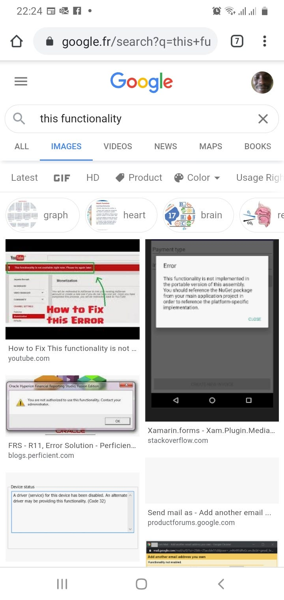

Oct 17, 2020
·
This functionality
If you are part of the ones who benefit from the functionality to be built. Your pricing for building it should take into account what your future usage will cost. It about building the functionality not this building, this home or this piece of software. It all about functionalities that act like pointers by pointing to this. This being something which interest the users of the functionalities. This can be interesting for them only if this points to somewhere they want to go or something they want to see. This is a very useful thought and tool for great marketers and software engineers. Hey designers also. This is a part of medium engineering what a great field I am lucky enough to know something about.
